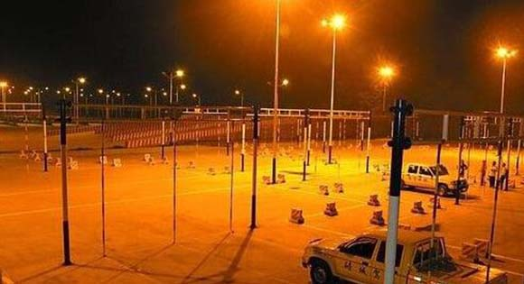

一般情况下，夜考行驶距离要比路考短，控制好速度，把握好灯光，还是很容易通过的。夜考主要考你会不会亮灯，以及对汽车灯光的熟练运用。考试中，若能正确使用和变换灯光，并且没有其他重大操作失误，就可及格。

1出车前检查车辆灯光情况，近光、远光，雾灯等一个也不能少;
2跟随前车行驶时，应适当拉长两车之间的距离；
3注意道路上的交通标志和施工信号；
4夜间会车时，若遇到对方不关闭远光灯，应立即减速，并连续使用远、近光示意对方关闭远光灯；若对方仍不关闭远光灯时，应靠路的右侧停车避让。
如果学员在考试时有下列情形之一的，考官就判定其夜考不及格
1不能正确开启灯光，不合格；
2同方向近距离跟车行驶时，使用远光灯，不合格；
3通过急弯、坡路、拱桥、人行横道或者没有交通信号灯控制的路口时，不交替使用远、近光灯示意，不合格；
4会车时不按规定使用灯光，不合格；
5在路口转弯时，使用远光灯，不合格；
6超车时未变换使用远、近光灯提醒被超越车辆，不合格；
7对低能见度道路情况判断差，不合格；
8在有路灯、照明良好的道路上行驶时，使用远光灯，不合格。
1发动车辆，打开车灯，车辆启动前注意转向灯;
2行驶过程中，注意近光灯与远光灯的合理使用：
一是会车时，距来车150米左右，必须使用近光灯；
二是当跟随前方车辆时，必须使用近光灯；
三是超车时，一方面打开转向灯，另一方面必须使用远近光灯变换提醒前方车辆；
四是经过道口，必须使用远近光灯变换提醒路口左右车辆注意。
3晚上行车，在无雾、无大雨情况下，不要使用雾灯;
4夜间行车，注意车速控制。一般低于道路最高限速；
5会车时，注意稳住车辆行驶方向，不要过于向右边靠，注意右方行人或车辆；
6夜间道路显得比其他地方白些，注意看清楚路面标志；
7经过桥梁、上坡或下坡时，能正确估计车辆行驶位置；